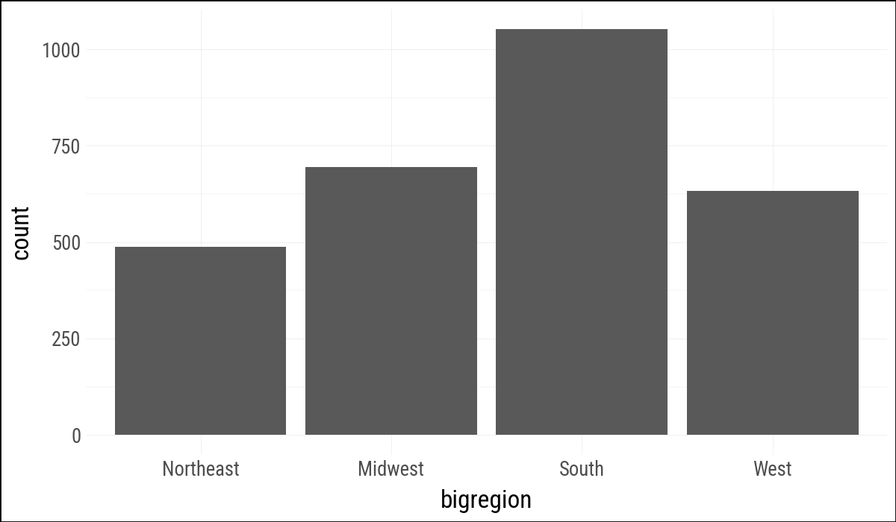
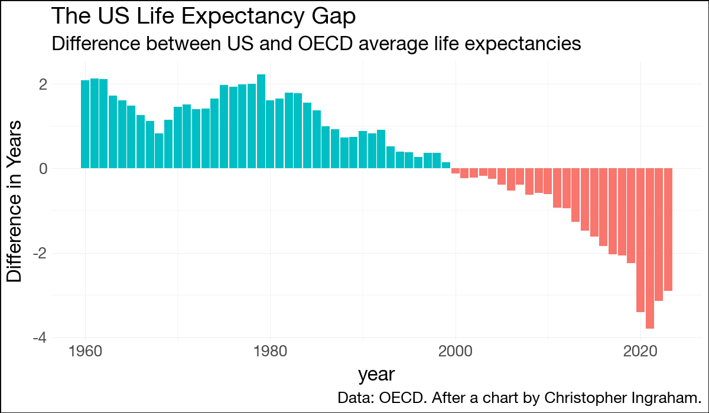

This chapter follows Chapter 4 of Healy (2026), translating the main plots to plotnine_polars. The main ideas carry over directly: grouping tells a geom how observations belong together, faceting splits one plot into a set of comparable panels, and several geoms compute summaries before drawing anything.
import polars as plimport plotnine_polars as p9from mizani.formatters import currency_format, percent_formatfrom plotnine.data import midwest as midwest_pdfrom plotnine_polars import aesfrom socviz_pl import load_data, theme_socvizp9.theme_set(theme_socviz())
<plotnine.themes.theme_minimal.theme_minimal at 0x124a4d810>
As in R, the line geom needs to know which observations should be connected. With the fluent API, the group mapping goes inside .geom_line() because it applies to the line layer.
Figure 4.5: Faceting on two categorical variables. Each panel plots the relationship between age and number of children, with the facets breaking out the data by sex (in the rows) and race (in the columns).
4.4 Geoms Can Transform Data
geom_bar() counts observations before drawing bars. This example is the direct translation of the R code, with bigregion mapped to x.
( gss_sm .ggplot(aes(x="bigregion")) .geom_bar())

Figure 4.6: A bar chart of GSS respondents by census region.
Modern plotnine uses after_stat("prop") where older ggplot examples often use ..prop...
Figure 4.11: Using the fill position adjustment to compare proportions across regions.
The next plot mirrors the book’s “not quite what we wanted” example. Grouping by religion makes the proportions add up across regions for each religion rather than within each region.
( oecd_sum .ggplot(aes(x="year", y="diff", fill="hi_lo")) .geom_col() .add_guides(fill="none") .labs( x=None, y="Difference in Years", title="The US Life Expectancy Gap", subtitle="Difference between US and OECD average life expectancies", caption="Data: OECD. After a chart by Christopher Ingraham." ))

Figure 4.22: Using geom_col() to plot negative and positive values in a bar chart.
4.8 Where to Go Next
The exercises in Healy (2026) mostly carry over. The main translation points are to use strings instead of formulas for facets, after_stat() for computed statistics, and Polars expressions such as .filter(pl.col("state").is_in(oh_wi)) for data preparation.
Healy, Kieran. 2026. Data Visualization: A Practical Introduction. 2nd ed. Princeton University Press. https://socviz.co/.